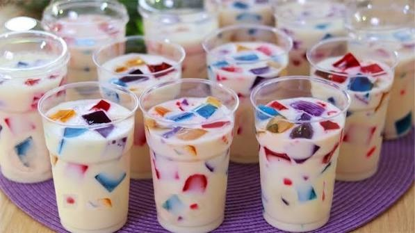

Doces · Musses
Musse de festa

Ingredientes
- 1 caixa de gelatina em pó sabor laranja
- 5 colheres (sopa) de água quente
- 2 colheres (sopa) de mel
- 1 xícara (chá) de ricota amassada
- 1 lata de creme de leite
- 2 claras
- 2 colheres (sopa) de açúcar
- ½ xícara (chá) de frutas cristalizadas
- 4 colheres (sopa) de castanha-do-pará torrada e picada
- Fatias de laranja para decorar
Modo de preparo
- Dissolva a gelatina na água quente e bata com o mel, a ricota e o creme de leite.
- Bata as claras em neve com o açúcar até suspiro e misture. Junte as frutas e as castanhas.
- Despeje em forma forrada com filme, gele 4 horas, desenforme e decore com laranja.